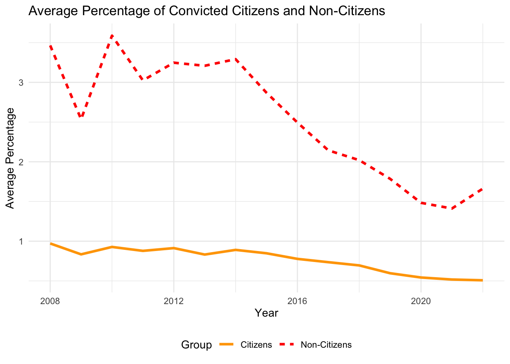

| Dataset | Rows | Columns | Years Covered | Number of Countries | Total Datapoints |
|---|---|---|---|---|---|
| Crime Dataset | 6868 | 7 | 2008 - 2022 | 41 | 48076 |
| Ideology Dataset | 6160 | 7 | 2019 - 2023 | 28 | 43120 |
| Manifesto Dataset | 5151 | 175 | 1 - 31 | 67 | 901425 |
| Population Dataset | 624046 | 8 | 1998 - 2023 | 42 | 4992368 |
Crime, Ideology, and Manifestos: A Comparative Study of European Political Trends
1 Introduction
1.1 GitHub Link
1.2 Research question: What are the associations between immigration and crime suspicions and convictions in the EU, considering political ideology?
The research explores the relationship between immigration status and crime outcomes (suspicion and conviction rates) in EU countries. It questions whether claims by political entities, particularly right-wing parties, that immigration drives up crime rates hold true, and explores how other intervening factors, such as the demographic profile of immigrants, might contribute to this perception.
1.3 Background Context and Relevance
Right-wing political narratives often link immigration with rising crime rates, neglecting broader contextual factors. For instance, statistical evidence shows that most crimes are committed by young males—a demographic disproportionately represented among immigrants.
In the EU, a significant proportion of non-citizens are young males. For example: - Non-national men aged 20–49 make up 29% of their demographic group, compared to 18% for nationals. - Additionally, 54–60% of unauthorized immigrants are male, with most under the age of 35.
These demographic realities can skew perceptions of immigrant involvement in crime when not carefully controlled for, contributing to oversimplified populist narratives. Source: Migration 2023
This study integrates crime statistics, demographic data, and measures of political ideology to disentangle these associations. By doing so, it challenges oversimplified narratives and explores whether shifts in political rhetoric influence actual crime outcomes or merely exacerbate perceptions of immigrant criminality.
1.4 Sub-Questions
As this study aims to clarify how political discourse influences public perceptions and crime outcomes involving immigrants, three key sub-questions emerge as a guiding framework, among others: 1. Does increased suspicion of immigrant crime correlate with heightened right-wing rhetoric? 2. Is the over-representation of young males among immigrants, rather than immigrant status itself, a more significant factor in crime rates? 3. Do conviction rates, as judicial outcomes, reflect ideological trends, or are they more stable and less influenced by political discourse?
1.5 Hypotheses
Preliminary hypotheses indicate that suspicion rates tend to increase in response to ideological, whereas conviction rates remain relatively stable, pointing to potential biases in suspicion rather than outcomes grounded in evidence. By accounting for intervening factors such as demographics, this research underscores the importance of nuanced policy making and seeks to challenge and prevent the perpetuation of harmful stereotypes.
2 Empirical Strategy and Data
2.1 Methodology
To address the research question, this analysis is structured to investigate the relationship between immigration and crime, as well as the broader sociopolitical factors that may influence this dynamic. The process begins with a visual examination of the primary variables of interest: the target variable, crime, and the main explanatory variable, immigration. Trends over the years 2008 to 2022 are decomposed to identify patterns and changes over time, providing critical context for interpreting the relationship between immigration and crime. By leveraging visual representation, this step aims to make the data more intuitive and accessible, establishing a solid foundation for subsequent statistical analysis.
The next stage involves conducting regression analyses to quantitatively assess the association between changes in the percentage of non-citizens in a country and crime-related outcomes, such as suspicion and conviction rates. This phase is crucial for isolating and understanding potential links between immigration and crime while controlling for other relevant factors. These regressions offer robust statistical insights into the strength and direction of the relationship, determining whether increases in immigration are associated with significant changes in crime outcomes.
Beyond the direct relationship between immigration and crime, the analysis expands to include additional variables that may shape or mediate this association. Two key contextual factors are considered: the level of political polarization within a country, measured by the Dalton Index, and the prevalence of right-wing ideology. Political polarization reflects the degree of societal division, which could influence both perceptions of immigration and its relationship to crime. Similarly, the prevalence of right-wing ideology may shape public discourse and policy responses to immigration, potentially affecting crime rates or their reporting. Incorporating these factors enriches the analysis, enabling a deeper exploration of how political and ideological contexts intersect with immigration and crime.
The analysis also examines immigration-related terminology in political party manifestos during election years in the sampled countries. By analyzing the language used in these documents, we aim to understand how political rhetoric shapes public perceptions and potentially influences crime-related outcomes. This component connects immigration and crime trends to broader sociopolitical narratives, offering a more comprehensive perspective on the issue.
Through this multi-faceted approach—combining visual analysis, regression models, and contextual exploration of political and ideological factors—the analysis seeks to uncover nuanced insights into the relationship between immigration and crime. Situating this relationship within its broader societal and political context provides a richer, more holistic framework for addressing the research question.
To achieve these goals, the following data sets were utilized:
2.2 Eurostat Crime and Criminal Justice Data Set
2.2.1 Download Link
2.2.2 Website Link
2.2.3 Data Set Description
The Eurostat Crime and Criminal Justice dataset provides yearly statistics on the citizens and non-citizens within the justice system across European Union member states, covering the period from 2008 to 2022. It includes data on suspicion and conviction rates per 1,000 inhabitants, offering insights into both the number of individuals suspected of crimes and those convicted. By distinguishing between citizens and non-citizens, this dataset sheds light on potential disparities in how these groups are treated within the legal system. Such information is crucial for understanding systemic inequities and evaluating the impact of policies on different demographics.
2.2.4 Description of Variables of Interest
- “leg_stat”: “PER_SUSP” indicates individuals who are suspected of committing crimes, “PER_CNV” indicates individuals who are convicted of crimes.
- “citizen”: “NAT” indicates nationals (citizens of the reporting country), “FOR” represents foreigners (non-citizens).
2.3 Eurostat Population Data Set
2.3.1 Download Link
2.3.2 Website Link
2.3.3 Data Set Description
Eurostat Crime provides detailed annual data on suspicion and conviction numbers, dis-aggregated by citizenship (non-citizens vs. citizens) for the period 2008–2022. This data set enables trend analysis to identify disparities between these groups. By combining this data with population statistics, we can calculate new variables representing the rates of suspicion and conviction for both citizens and non-citizens as proportions of their respective population sizes in the countries of interest. The Eurostat Population data set provides annual data on the population of citizens and non-citizens across EU member states from 2008 to 2022. Non-citizens include foreigners and stateless individuals. This data set allows for detailed analysis of demographic compositions and is crucial for understanding disparities between citizens and non-citizens. We aim to use it to determine the number of citizens and non-citizens suspected and convicted in each country as a percentage, allowing for a deeper understanding.
2.3.4 Description of Variables of Interest
- “citizen”: “FOR_STLS” indicates individuals who are foreigners or stateless, “NAT” indicates individuals who are citizens to the country.
- “other demographic variables”: the variables age and sex allow us if wished to assess how more specific trends, for instance we could observ whether changes in results occur if we consider only men.
2.4 Manifesto Project Data set
2.4.1 Download Link
2.4.2 Website Link
2.4.3 Data Set Description
The Manifesto Project data set offers a systematic analysis of political party manifestos across various countries, including EU member states. Spanning elections from 1946 to 2017 (with country-specific coverage), it captures the percentage of text devoted to key themes such as “law and order,” “national security,” and “national values.” This data set is particularly valuable for studying the evolution of political discourse over time and across contexts. The dataset’s coding of text into quantifiable measures makes it a powerful tool for understanding the role of party platforms in shaping public opinion and influencing policy. Its detailed historical scope enables longitudinal studies of political ideologies and their relationship with contemporary governance trends.
2.4.4 Description of Variables of Interest
- “per101 to per109”: represent the percentage of the political party’s manifesto dedicated to specific themes related to national security, crime, and immigration. They focus on topics like law and order, national security, crime prevention, and the role of the state in dealing with security threats. Specifically: per101: Law and Order, per102: National Security, per103: Crime and Punishment, per104: Prison and Penal System, per105: Immigration, per106: International Relations (related to security), per107: Economic Issues, per108: Welfare and Social Issues, per109: Cultural and National Identity
- “per201 to per204”: focus on economic policies, social support, and public services, potentially linking to discussions about immigration’s impact on the economy and social welfare. Specifically, per201: Economic Growth, per202: Employment, per203: Social Security, per204: Public Services
- “per301 to per305”: focus on social welfare, social issues, and public goods, which might also intersect with debates around immigration and crime in relation to societal well being and state responsibility. Specifically, per301: Social Welfare, per302: Education, per303: Health Care, per304: Family Support, per305: Environment and Sustainability.
2.5 EU Political Barometer Data set
2.5.1 Download Link
2.5.2 Website Link
2.5.3 Data Set Description
The EU Political Barometer data set provides bi-monthly data on public opinion and political preferences across EU member states from 2019 to 2023. It tracks ideological shifts, political attitudes, and public reactions to major societal events and political campaigns. Key indicators include changes in support for various ideologies and parties, offering a granular view of how public sentiment evolves over time. This data set is particularly useful for analyzing short-term trends and understanding the relationship between political discourse and public opinion. By examining fluctuations in attitudes during specific events or election campaigns, we can identify patterns in voter behavior and ideological alignment. Its frequent updates make it a critical resource for real-time political analysis and policy evaluation.
2.5.4 Description of Variables of Interest
- “left_ideology”: numeric score (0-10) representing the left-wing ideological positioning in the country, where a higher value corresponds to stronger left ideology.
- “right_ideology”: numeric score (0-10) representing the right-wing ideological positioning in the country, where a higher value corresponds to stronger right ideology.
- “dalton”: named after the political scientist Russell Dalton, a numeric score (0-10) that shows the degree of ideological polarization in a country, where a higher score corresponds to higher polarization.
2.6 Description Table
3 Data Cleaning Process
The following section outlines the comprehensive data cleaning and integration process required to prepare the data for analysis. Given that this study incorporates four distinct data sets, each with varying coverage in terms of years, countries, and data frequencies, significant effort was invested in harmonizing these sources. These data sets, while rich in information, hence presented challenges such as inconsistent time periods, differing country classifications, and variations in data granularity. The cleaning process involved standardizing formats, ensuring compatibility across data sets, and removing variables that were not relevant to the research objectives. Additionally, data joining steps were undertaken to merge these sources into a unified data set that could support the analysis. To this end, tables had to be pivoted and reshaped to facilitate merging by year and country. This meticulous preparation was essential to ensure the reliability and consistency of the findings while enabling robust exploration of the relationships between immigration, crime, and political ideology.
3.1 Cleaning of Eurostat Data, Crime
Filtering and cleaning: remove irrelevant categories (e.g., “TOTAL” citizens and “PER_PRSC” status), keeping only the data as total number of citizens and non-citizens suspicted and convicted to crimes.
Country name assignment: convert country codes to full country names using the “countrycode” package.
Category creation: classify data into four categories based on citizenship and legal status: “Convicted Citizens,” “Convicted Non-Citizens,” “Suspected Citizens,” and “Suspected Non-Citizens.”
Drop irrelevant variables: rename and include only variables of interest: country, date, citizenship & legal status category, and crime rates.
Data reshaping: pivot the data to have a single row per country per year, with columns for each of the four categories (convicted and suspected citizens/non-citizens).
3.2 Cleaning of Eurostat Data, Population
Filtering and cleaning: remove irrelevant category (e.g. “UNK” or “TOTAL” citizens), keeping only the data as total numbers. Creating a new data set in which we do not separate per sex or age.
Date filtering: remove data before 2008 (the first available year in the Crime data set).
Country name assignment: convert country codes to full country names using the “countrycode” package.
Summarize the data: group the data by country, year, and citizen and calculate the total population for each group.
Reshape Data for Citizens and Non-Citizens: Reshapes the data to separate populations of citizens (NAT) and non-citizens (FOR_STLS).
3.3 Cleaning of Manifesto Data, Manifesto
Date filtering: remove data before 2008 (the first available year in the Crime dataset).
Column selection: Keeps only relevant columns in the manifesto dataset (e.g., political themes related to law and order, national security, immigration).
Group by date and country: extract the year from the date and group the data by country and year to compute the average percentage of the manifesto dedicated to specific themes like law and order, national security, and immigration.
3.4 Cleaning of Barometer Data, Ideology
Filter invalid data: removes data related to “ewma” (exponentially weighted moving average) and retain only real ideological scores.
Date filtering: filter the data set to include only data up until 2023.
Ideology Data: extract the year from the date and groups the data by country and year to calculate the average ideological scores (left, right, and Dalton’s polarization index).
3.5 Joint Cleaning
- Data intersection: ensure that only countries present in the Crime and Population are kept in the Manifesto and Ideology data sets. This is achieved through a semi_join to keep only the common countries.
3.6 Merging of Data Sets
Merge Crime, Manifesto and Ideology: previously renamed columns in all three data sets for consistency and merge them into one unified data set. “full_join” is used to ensure no data is lost while combining them based on country and year.
Merge also with Population Data: add the fourth data set. It would be informative to present the data as percentages in addition to raw numbers. For example, we can display the proportion of suspected non-citizens relative to the total population of non-citizens, and compare this to the proportion of suspected citizens relative to the total population of citizens. We hence also calculate percentages for convictions and suspicions for both citizens and non-citizens
4 Results
The graphs reveal several important trends when examining the conviction and suspicion rates of citizens and non-citizens over time. First, we observe that in absolute terms, the number of citizens convicted or suspected of crimes is consistently higher than that of non-citizens. This finding holds true across our subset of the sample, which includes . However, this observation alone does not provide the full picture, as it does not account for the relative size of the citizen and non-citizen populations in each country. To better address our research question, we instead examine the number of convicted and suspected individuals as a percentage of the total population of citizens or non-citizens within a country.
When analyzing these relative measures, non-citizens consistently exhibit higher conviction and suspicion rates compared to citizens. On average, approximately 4% of non-citizens in our sample are suspected of crimes. This trend includes a significant spike in 2014, where suspicion rates sharply increase before returning to the 4% average in subsequent years. In contrast, the suspicion rate for citizens is significantly lower and more stable, averaging between 0% and 1%, with a slight upward spike observed in 2013.
Similarly, conviction rates exhibit distinct patterns for citizens and non-citizens. For non-citizens, the average percentage convicted of crimes is around 3% between 2008 and 2014. This figure declines steadily in later years, reaching approximately 1.5% by 2020. For citizens, the average conviction rate is initially around 1% during the same period but gradually decreases, reaching almost zero by 2022. These trends suggest a pronounced difference in the treatment or behavior of citizens versus non-citizens within the criminal justice system.
To gain a deeper understanding of our main explanatory variable of interest, we analyzed the percentage of non-citizens in selected countries—Austria, Bulgaria, France, and Germany—alongside the average percentage of non-citizens across the entire sample. For the selected countries, a clear upward trend in the share of non-citizens is evident between 2008 and 2022, although the levels vary significantly between countries. Austria, for instance, stands out with a remarkably high share of non-citizens, reaching approximately 17% in 2022. In contrast, Bulgaria deviates from this general trend, experiencing a decline in the percentage of non-citizens from 1.6% to 1% between 2021 and 2022.
When we look at the entire sample, the average growth rate of the percentage of non-citizens per year is an impressive 4.47%, highlighting a consistent and significant upward trend. While these findings are descriptive and do not establish causality, they are crucial for contextualizing the broader analysis. They reveal that, on average, the number of non-citizens has grown disproportionately compared to the number of citizens across the countries in our dataset. This disproportionate increase suggests that non-citizens are likely composed of a demographic profile that differs fundamentally from that of citizens. Specifically, the influx of new immigrants tends to be disproportionately male and younger, traits associated with a demographic that is statistically more likely to be suspected or convicted of crime.
This observation is particularly important for understanding the broader context of our study. It offers a plausible explanation for the higher percentage of non-citizens suspected or convicted of crime compared to citizens. By acknowledging the demographic dynamics driving these differences, we can better interpret the patterns observed in the data. Before proceeding with any causal analysis, it is essential to highlight these trends, as they provide a foundational understanding of the structural and demographic factors at play. These findings underscore the importance of considering how the characteristics of non-citizen populations may influence the overall patterns of suspicion and conviction rates observed in the data.
5 Robustness checks
## Chi sqr test, etc....MORE YAP YAP
6 Conclusion and discussion
YAPYAPYAP # Appendix
6.0.1 Figure 1

6.0.2 Figure 2

6.0.3 Figure 3
6.1 Relationship between Percentage of Migrants and Total Convictions

| Term | Estimate | Std.Error | t.value | p.value | |
|---|---|---|---|---|---|
| (Intercept) | Intercept | 167332.615 | 17607.320 | 9.504 | 0.000 |
| percentage_nc_pop | % Non-Citizens | -1363.033 | 1438.105 | -0.948 | 0.344 |
Call:
lm(formula = total_convicted ~ percentage_nc_pop, data = merged_data_final)
Residuals:
Min 1Q Median 3Q Max
-156394 -132270 -92843 42011 719387
Coefficients:
Estimate Std. Error t value Pr(>|t|)
(Intercept) 167333 17607 9.504 <2e-16 ***
percentage_nc_pop -1363 1438 -0.948 0.344
---
Signif. codes: 0 '***' 0.001 '**' 0.01 '*' 0.05 '.' 0.1 ' ' 1
Residual standard error: 206800 on 258 degrees of freedom
(102 observations deleted due to missingness)
Multiple R-squared: 0.00347, Adjusted R-squared: -0.0003927
F-statistic: 0.8983 on 1 and 258 DF, p-value: 0.34416.2 Relationship between Percentage of Migrants and Total Suspicions
| Term | Estimate | Std.Error | t.value | p.value | |
|---|---|---|---|---|---|
| (Intercept) | Intercept | 352159.176 | 40433.52 | 8.710 | 0.000 |
| percentage_nc_pop | % Non-Citizens | -4670.398 | 2678.63 | -1.744 | 0.082 |
Call:
lm(formula = total_suspected ~ percentage_nc_pop, data = merged_data_final)
Residuals:
Min 1Q Median 3Q Max
-331964 -289189 -195690 -25413 2060245
Coefficients:
Estimate Std. Error t value Pr(>|t|)
(Intercept) 352159 40434 8.710 <2e-16 ***
percentage_nc_pop -4670 2679 -1.744 0.0822 .
---
Signif. codes: 0 '***' 0.001 '**' 0.01 '*' 0.05 '.' 0.1 ' ' 1
Residual standard error: 519200 on 313 degrees of freedom
(47 observations deleted due to missingness)
Multiple R-squared: 0.009619, Adjusted R-squared: 0.006455
F-statistic: 3.04 on 1 and 313 DF, p-value: 0.082216.3 Relationship between Percentage of Migrants and Suspicions of Non-citizens
- Removed Bulgaria as it was a clear outlier

| Term | Estimate | Std.Error | t.value | p.value | |
|---|---|---|---|---|---|
| (Intercept) | Intercept | 352159.176 | 40433.52 | 8.710 | 0.000 |
| percentage_nc_pop | % Non-Citizens | -4670.398 | 2678.63 | -1.744 | 0.082 |
6.4 Relationship between Percentage of Migrants and Convictions of Non-citizens

| Term | Estimate | Std.Error | t.value | p.value | |
|---|---|---|---|---|---|
| (Intercept) | Intercept | 352159.176 | 40433.52 | 8.710 | 0.000 |
| percentage_nc_pop | % Non-Citizens | -4670.398 | 2678.63 | -1.744 | 0.082 |
6.5 Relationship between Polarization and Total Convictions
Call:
lm(formula = total_convicted ~ dalton + poly(year, 2), data = merged_data_final)
Residuals:
Min 1Q Median 3Q Max
-225431 -99217 -43844 37893 514440
Coefficients:
Estimate Std. Error t value Pr(>|t|)
(Intercept) -4956 968374 -0.005 0.996
dalton 138250 31732 4.357 5.45e-05 ***
poly(year, 2)1 -8507920 19191745 -0.443 0.659
poly(year, 2)2 2680583 6918734 0.387 0.700
---
Signif. codes: 0 '***' 0.001 '**' 0.01 '*' 0.05 '.' 0.1 ' ' 1
Residual standard error: 173100 on 58 degrees of freedom
(300 observations deleted due to missingness)
Multiple R-squared: 0.2509, Adjusted R-squared: 0.2122
F-statistic: 6.477 on 3 and 58 DF, p-value: 0.00074176.6 Relationship between Polarization and Percentage Migrants Convictions

Call:
lm(formula = convicted_p_nc ~ dalton + poly(year, 2), data = merged_data_final)
Residuals:
Min 1Q Median 3Q Max
-1.7265 -0.5996 -0.3032 0.5714 2.3761
Coefficients:
Estimate Std. Error t value Pr(>|t|)
(Intercept) 8.7343 5.8838 1.484 0.143
dalton 0.1268 0.1928 0.658 0.513
poly(year, 2)1 -149.4786 116.6088 -1.282 0.205
poly(year, 2)2 52.3659 42.0381 1.246 0.218
Residual standard error: 1.052 on 58 degrees of freedom
(300 observations deleted due to missingness)
Multiple R-squared: 0.0344, Adjusted R-squared: -0.01555
F-statistic: 0.6888 on 3 and 58 DF, p-value: 0.56266.7 Relationship between Polarization and Percentage Migrants Suspicions

Call:
lm(formula = suspected_p_nc ~ dalton + poly(year, 2), data = merged_data_final)
Residuals:
Min 1Q Median 3Q Max
-3.4820 -1.8383 -0.2607 1.8127 5.0261
Coefficients:
Estimate Std. Error t value Pr(>|t|)
(Intercept) 6.023 12.072 0.499 0.619453
dalton 1.284 0.311 4.129 0.000103 ***
poly(year, 2)1 -144.700 237.297 -0.610 0.544067
poly(year, 2)2 54.725 85.133 0.643 0.522536
---
Signif. codes: 0 '***' 0.001 '**' 0.01 '*' 0.05 '.' 0.1 ' ' 1
Residual standard error: 2.299 on 67 degrees of freedom
(291 observations deleted due to missingness)
Multiple R-squared: 0.2071, Adjusted R-squared: 0.1716
F-statistic: 5.834 on 3 and 67 DF, p-value: 0.0013296.8 Relationship between Right Ideology and Total Convictions
Call:
lm(formula = total_convicted ~ right_ideology + year, data = merged_data_final)
Residuals:
Min 1Q Median 3Q Max
-201027 -130014 -51788 59116 564936
Coefficients:
Estimate Std. Error t value Pr(>|t|)
(Intercept) -40543709 47264754 -0.858 0.39447
right_ideology 123309 37616 3.278 0.00175 **
year 19662 23332 0.843 0.40281
---
Signif. codes: 0 '***' 0.001 '**' 0.01 '*' 0.05 '.' 0.1 ' ' 1
Residual standard error: 181900 on 59 degrees of freedom
(300 observations deleted due to missingness)
Multiple R-squared: 0.1589, Adjusted R-squared: 0.1304
F-statistic: 5.574 on 2 and 59 DF, p-value: 0.0060616.9 Relationship between Right Ideology and Percentage Migrants Convictions

Call:
lm(formula = convicted_p_nc ~ right_ideology + year, data = merged_data_final)
Residuals:
Min 1Q Median 3Q Max
-1.6465 -0.6756 -0.1998 0.6018 2.5719
Coefficients:
Estimate Std. Error t value Pr(>|t|)
(Intercept) 12.313725 273.398031 0.045 0.964
right_ideology 0.195990 0.217584 0.901 0.371
year -0.006027 0.134961 -0.045 0.965
Residual standard error: 1.052 on 59 degrees of freedom
(300 observations deleted due to missingness)
Multiple R-squared: 0.01736, Adjusted R-squared: -0.01595
F-statistic: 0.5211 on 2 and 59 DF, p-value: 0.59656.10 Relationship between Right Ideology and Percentage Migrants Suspicions
Call:
lm(formula = suspected_p_nc ~ right_ideology + year, data = merged_data_final)
Residuals:
Min 1Q Median 3Q Max
-4.6446 -1.6378 -0.0714 1.8739 5.5168
Coefficients:
Estimate Std. Error t value Pr(>|t|)
(Intercept) -872.9302 541.4366 -1.612 0.111540
right_ideology 1.3872 0.3906 3.551 0.000701 ***
year 0.4288 0.2675 1.603 0.113518
---
Signif. codes: 0 '***' 0.001 '**' 0.01 '*' 0.05 '.' 0.1 ' ' 1
Residual standard error: 2.351 on 68 degrees of freedom
(291 observations deleted due to missingness)
Multiple R-squared: 0.1581, Adjusted R-squared: 0.1334
F-statistic: 6.387 on 2 and 68 DF, p-value: 0.0028716.10.1 Average Share of Non-Citizens Over Time